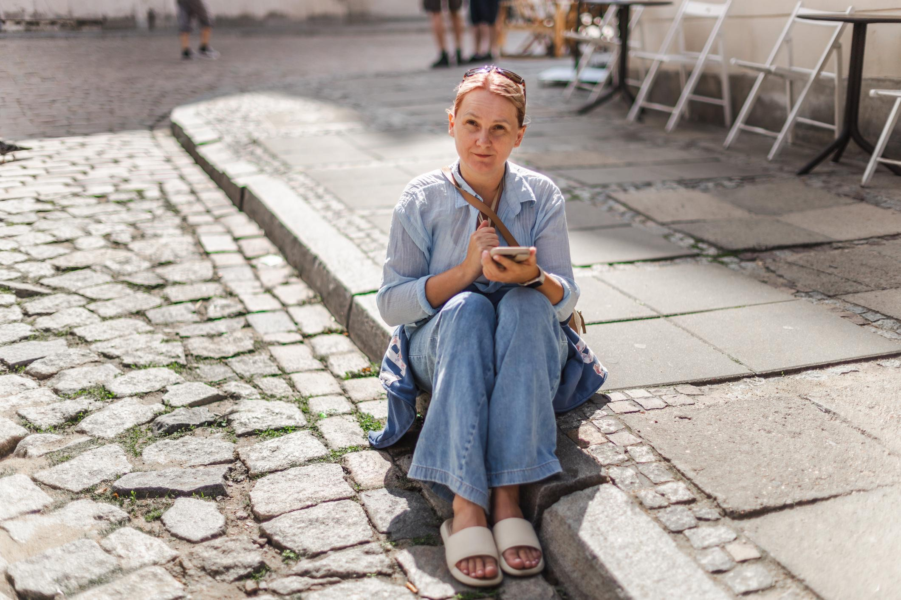

Será que é tranquilo ir sozinha?
E se meus planos mudarem?
E se eu tiver perdendo algum rolê?
Nem toda mulher que viaja sozinha se sente livre para experimentar o novo.
A incerteza de estar em um ambiente desconhecido.
A ausência de recomendações sensíveis à experiência feminina.
A dificuldade de acessar a cidade para além do circuito turístico.
E se sentir-se mais segura não significasse abrir mão da espontaneidade?
E se a liberdade de explorar fosse construída coletivamente?
Apresentamos
é um serviço de descoberta de rolês locais,
para ajudar mulheres que viajam sozinhas ou com mais uma pessoa
a explorar a cidade além do circuito turístico com confiança,
através de recomendações de quem mora lá, com curadoria e informação de segurança.